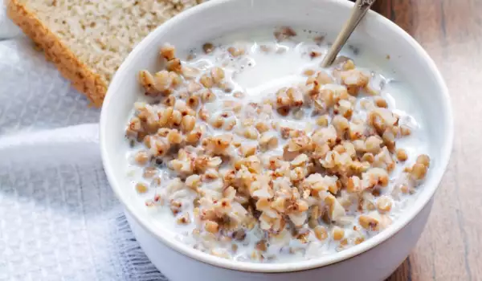

Buckwheat with milk

Description
Buckwheat is a cozy alternative to your breakfast oatmeal - with a chewy and heartier texture.
Ingredients
- buckwheat - 1 cup
- milk - 3 cups
- sugar - to taste or use honey
- cinnamon - 2 pinches, optional
Steps
- Parboil the buckwheat in boiling water, cover and let it sit until swollen nicely.
- Then mix this buckwheat porridge with the warm milk, in which you have dissolved the sugar / honey and a little cinnamon if desired.